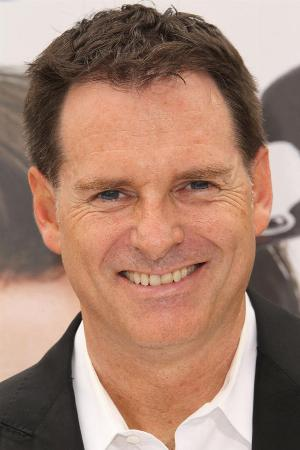

Nació el 10 de junio de 1964 en Wyandotte, Míchigan, Estados Unidos.Tiene un hermano, Daniel Waters, también actor, guionista y director. Contrajo matrimonio con Dina Waters el 10 de noviembre de 2000. Fue invitado a formar parte de la Academy of Motion Picture Arts and Sciences en 2006.
Mark Stephen Waters Wyandotte, es un director, productor y guionista estadounidense de cine y televisión. Ha dirigido películas como Freaky Friday (2003), Mean Girls (2004), Ghosts of Girlfriends Past (2009) o Mr. Popper's Penguins (2011).
Su debut en el cine se produjo con la comedia que él mismo escribió,The House of Yes (1997), protagonizada por Parker Posey. Fue presentada en el Festival de Cine de Sundance, donde recibió numerosos elogios.En 2001 se estrenó la comedia Head Over Heels, en la que Freddie Prinze Jr. era el intérprete principal. En los años siguientes dirigió en dos ocasiones a Lindsay Lohan, la primera de ellas fue con Freaky Friday (2003) donde Lohan interpretaba a la hija de Jamie Lee Curtis y que fue descrita por la prensa como "fresca y divertida". Este adaptación de la película de 1976 de título homónimo protagonizada por Jodie Foster es su trabajo más taquillero en Estados Unidos y Canadá hasta el momento, con un cúmulo total de 110 millones de dólares. El siguiente proyecto junto a la actriz fue en la cinta adolescente Mean Girls (2004), en la que también aparecía Rachel McAdams, y que recibió el apoyo de la crítica.
Nominaciones: Independent Spirit Award a la Mejor Película.
Educación: Conservatorio de AFI (1992), American Film Institute, Riley High School.
Ocupaciones:Director y productor.
